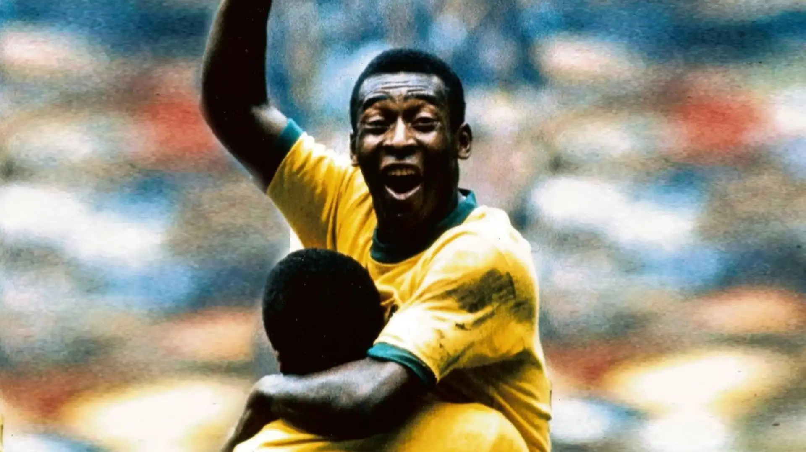
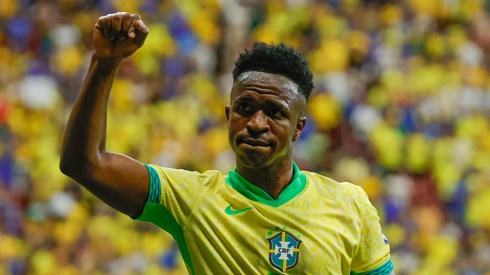
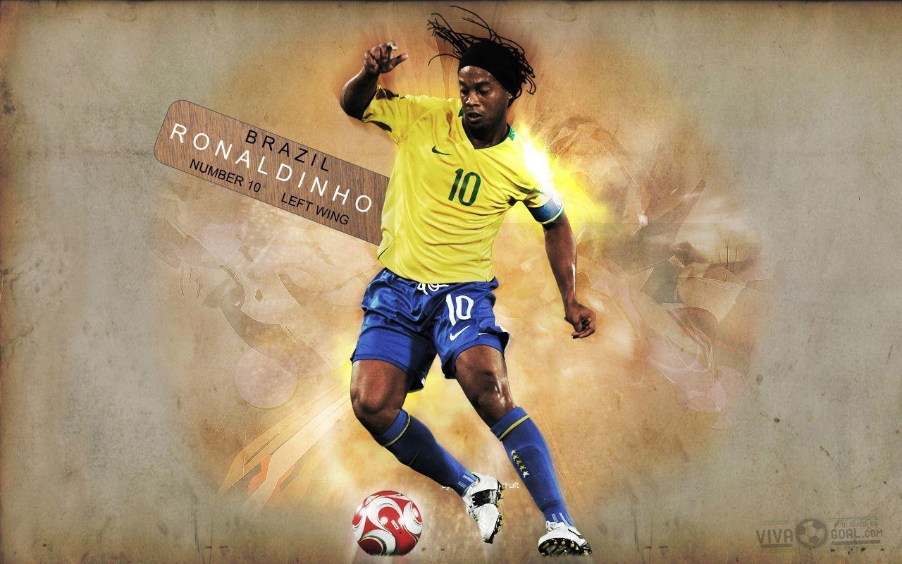
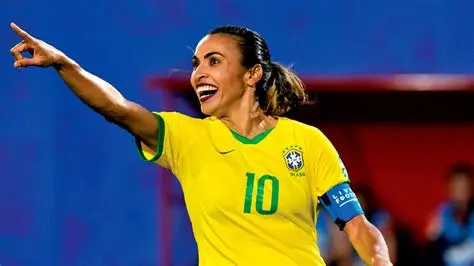

O futebol também precisa jogar contra o racismo.
O futebol é uma das maiores manifestações culturais do Brasil, reunindo pessoas de diferentes origens. Entretanto, apesar de representar união e diversidade, o esporte ainda enfrenta problemas como o racismo e a discriminação contra atletas negros.
Apresentação do tema
O racismo no futebol brasileiro manifesta-se por meio de ofensas, preconceitos e desigualdades enfrentadas por jogadores negros. Este trabalho busca mostrar como esse problema está presente no esporte, destacando a importância de combatê-lo e valorizar atletas que marcaram sua história.
Contextualização histórica, cultural e social
Historicamente, jogadores negros enfrentaram dificuldades para conquistar espaço no futebol brasileiro. Em 1907, por exemplo, houve restrições à participação de atletas negros em competições no Rio de Janeiro.
Apesar das conquistas e do reconhecimento desses jogadores ao longo dos anos, o racismo continua presente no esporte. Em 2023, foram registrados 136 casos de racismo no futebol brasileiro, segundo o Observatório da Discriminação Racial no Futebol.
Relação com a Educação Física
O futebol é uma prática corporal que promove convivência, participação e trabalho em equipe. Por isso, a Educação Física também deve incentivar o respeito às diferenças, a inclusão e a igualdade de oportunidades, combatendo qualquer forma de discriminação nas atividades esportivas.
Relações étnico-raciais e representatividade
A representatividade negra é fundamental para valorizar a contribuição dos atletas negros para o futebol. Pelé, Vinícius Júnior, Ronaldinho Gaúcho e Marta representam o protagonismo negro e a resistência diante do preconceito.
Reconhecer suas histórias ajuda a combater o apagamento histórico e reforça a importância da igualdade racial no esporte.
Considerações finais
O futebol brasileiro foi construído com a participação fundamental de atletas negros. Entretanto, o preconceito ainda demonstra a necessidade de mudanças.
Pelé

Biografia
Pelé nasceu em 23 de outubro de 1940, na cidade de Três Corações, em Minas Gerais. Seu nome verdadeiro era Edson Arantes do Nascimento. Filho de uma família humilde, começou a jogar futebol ainda criança e recebeu incentivo de seu pai, que também era jogador.
Desde pequeno, demonstrava grande habilidade com a bola. Seu talento chamou a atenção de pessoas ligadas ao futebol, e ele entrou para o Santos Futebol Clube ainda muito jovem.
Carreira no Santos (1956–1974)
Pelé começou sua carreira profissional no Santos aos 15 anos. No clube, conquistou diversos títulos, incluindo duas Copas Libertadores (1962 e 1963) e dois Mundiais Interclubes. Tornou-se um dos maiores ídolos da história do time.
Seleção Brasileira (1957–1971)
Pelé representou o Brasil em quatro Copas do Mundo e conquistou três delas:
1958 — Suécia: conquistou sua primeira Copa do Mundo aos 17 anos.
1962 — Chile: conquistou seu segundo título mundial, apesar de ter se machucado durante a competição.
1966 — Inglaterra: o Brasil foi eliminado na primeira fase.
1970 — México: conquistou sua terceira Copa do Mundo, sendo um dos principais jogadores da equipe.
Principais conquistas
Campeão da Copa do Mundo.
Campeão da Libertadores.
Campeão mundial interclubes.
Em 1.364 partidas, segundo números divulgados pela CBF.
Representatividade
Pelé foi um símbolo de representatividade negra no esporte. Por ser um homem negro que alcançou reconhecimento mundial, inspirou milhões de pessoas e mostrou que a população negra pode ocupar espaços de destaque na sociedade. Sua história representa superação, talento e a importância da igualdade racial.
Falecimento e legado
Pelé faleceu em 29 de dezembro de 2022, aos 82 anos, na cidade de São Paulo. Sua morte causou grande comoção no Brasil e no mundo.
Seu legado permanece vivo por meio de suas conquistas, de sua habilidade e de sua contribuição para tornar o futebol brasileiro conhecido internacionalmente. Até hoje, é lembrado como o Rei do Futebol.
Vinícius Júnior

Biografia e carreira
Vinícius Paixão de Oliveira Júnior, conhecido mundialmente como Vini Jr., nasceu em 12 de julho de 2000, em São Gonçalo, no Rio de Janeiro. Desde pequeno, demonstrou talento para o futebol e iniciou sua formação nas categorias de base do Flamengo, clube pelo qual estreou profissionalmente em 2017.
Em 2018, transferiu-se para o Real Madrid, da Espanha, onde passou a ganhar destaque internacional. Com velocidade, habilidade, dribles e capacidade de decidir partidas, tornou-se um dos principais jogadores da equipe e da Seleção Brasileira.
Entre suas principais conquistas estão duas edições da Liga dos Campeões da UEFA (2022 e 2024), títulos do Campeonato Espanhol e o prêmio The Best da FIFA de melhor jogador do mundo em 2024. Também foi decisivo ao marcar gols nas finais da Liga dos Campeões de 2022 e 2024. Em 6 de agosto de 2026, renovou seu contrato com o Real Madrid até 2032.
Enfrentamento ao racismo
Vinícius Júnior tornou-se uma das principais vozes mundiais na luta contra o racismo no futebol. Durante sua carreira na Espanha, sofreu diversos episódios de discriminação racial por parte de torcedores, especialmente em partidas do Campeonato Espanhol.
Um dos casos mais conhecidos aconteceu em maio de 2023, durante uma partida entre Real Madrid e Valencia. Na ocasião, o jogador sofreu ofensas racistas vindas das arquibancadas. O episódio ganhou repercussão internacional e provocou manifestações de apoio de atletas, clubes e instituições esportivas.
Após esse acontecimento, Vinícius passou a se posicionar ainda mais publicamente contra o racismo, cobrando investigações e punições aos responsáveis. Em 2024, três torcedores envolvidos nas ofensas contra o jogador foram condenados pela Justiça espanhola a oito meses de prisão, em uma decisão histórica contra o racismo nos estádios.
Em junho de 2023, a Seleção Brasileira entrou em campo contra Guiné utilizando um uniforme completamente preto no primeiro tempo, como manifestação de apoio a Vinícius e de repúdio ao racismo. A iniciativa recebeu reconhecimento da FIFA com o prêmio Fair Play de 2023.
Em fevereiro de 2026, outro episódio de racismo foi relatado durante uma partida contra o Benfica. O jogo foi interrompido após a denúncia do jogador, e a Confederação Brasileira de Futebol solicitou uma investigação rigorosa e a punição dos envolvidos.
Impacto e conscientização
A atuação de Vinícius Júnior ultrapassa os limites dos campos de futebol. Ao denunciar situações de racismo e exigir respeito, o jogador contribui para dar visibilidade a um problema que ainda está presente no esporte e na sociedade. Sua postura incentiva outros atletas a não permanecerem em silêncio diante da discriminação e mostra a importância de denunciar atitudes preconceituosas.
Outro destaque é a criação do Instituto Vini Jr., iniciativa desenvolvida pelo jogador e sua equipe familiar, que busca contribuir para a transformação da educação pública brasileira. O projeto utiliza o futebol, a tecnologia e o movimento corporal como ferramentas de aprendizagem, promovendo também a educação antirracista e a valorização dos estudantes.
Ronaldinho Gaúcho

Biografia e carreira
Ronaldinho Gaúcho (1980) é jogador de futebol brasileiro, considerado um dos maiores que o Brasil já teve. Foi pentacampeão pela Seleção Brasileira em 2002, na Copa da Coreia do Sul e do Japão. Foi considerado o melhor jogador do mundo por dois anos seguidos pela FIFA: 2004 e 2005.
Ronaldo de Assis Moreira nasceu no Rio Grande do Sul. Desde a infância, já revelava seu talento para o futebol, quando entrou para o Grêmio Foot-Ball Porto Alegrense com apenas 7 anos.
Ronaldinho Gaúcho começou sua carreira no futebol profissional em 1997. Em 1999, foi convocado para a Seleção Brasileira. Nesse ano, marcou 22 gols, o que lhe deu maior visibilidade.
Ao longo da carreira, passou por clubes como Grêmio, Paris Saint-Germain, Barcelona, Milan, Flamengo e Atlético Mineiro, além de experiências no futebol de outros países.
Conquistas
- Copa do Mundo FIFA: 2002.
- Copa das Confederações: 2005 (como capitão).
- Copa América: 1999.
- Mundial Sub-17: 1997.
- Medalha de bronze olímpica: Pequim 2008.
Representatividade e legado
Origem e identidade gaúcha
Criado em Porto Alegre, em uma família humilde, Ronaldinho tornou-se uma referência negra originária do Rio Grande do Sul, região historicamente marcada pela forte presença da imigração europeia e pela invisibilização da população afrodescendente.
Protagonismo e premiações
Ronaldinho integra a linhagem de ídolos negros que lideraram a Seleção Brasileira em conquistas mundiais. Também faz parte do grupo de brasileiros negros vencedores do prêmio de Melhor do Mundo da FIFA, servindo de inspiração para novas gerações.
Enfrentamento ao racismo
Apesar do prestígio global e de declarar ter tido uma infância acolhedora em sua comunidade, sua trajetória também expôs contradições raciais no esporte. Foi alvo de ofensas racistas em estádios europeus e de ataques discriminatórios nas redes sociais durante sua passagem pelo futebol mexicano, em 2014.
Futebol-arte e alegria
Apelidado de “Bruxo”, Ronaldinho ficou marcado pela “ousadia e alegria”. Sua improvisação, passes sem olhar e dribles desconcertantes encantaram torcidas e ajudaram a popularizar o conceito de Joga Bonito.
Conquistas históricas
Ronaldinho conquistou a Copa do Mundo FIFA (2002), a Liga dos Campeões da UEFA (2005–06), a Copa Libertadores da América (2013) e o prêmio de Melhor Jogador do Mundo pela FIFA (2004 e 2005), reunindo títulos importantes em sua carreira.
Marta

Biografia e trajetória
Marta Vieira da Silva, conhecida mundialmente como a Rainha do Futebol, é considerada uma das maiores atletas da história do esporte. Nascida em 19 de fevereiro de 1986, em Dois Riachos, Alagoas, sua trajetória é marcada pela superação de barreiras sociais e financeiras para transformar o futebol feminino.
Nascida em uma família humilde e criada pela mãe, Tereza, Marta jogava futebol entre os meninos em campos de terra batida. Aos 14 anos, deixou Alagoas rumo ao Rio de Janeiro e foi aprovada no Vasco da Gama.
Transferiu-se para o futebol sueco em 2004, onde brilhou pelo Umeå IK, conquistando a Liga dos Campeões da UEFA (2003/04) e múltiplos campeonatos nacionais.
Principais recordes
- Maior artilheira da história das Copas do Mundo (entre homens e mulheres), com 17 gols marcados em Mundiais.
- Primeira pessoa a marcar gols em cinco edições diferentes de Copas do Mundo.
- Maior artilheira da Seleção Brasileira, considerando homens e mulheres, com mais de 116 gols oficiais pela Amarelinha.
- Eleita seis vezes a melhor jogadora do mundo pela FIFA (2006, 2007, 2008, 2009, 2010 e 2018), sendo cinco vezes consecutivas.
- Vencedora do prêmio inaugural “Prêmio Marta” da FIFA em 2024.
- Eleita a melhor jogadora da história do futebol feminino (2023) pela IFFHS.
Conquistas
Jogos Olímpicos: Atenas 2004, Pequim 2008 e Paris 2024.
Jogos Pan-Americanos: Santo Domingo 2003 e Rio 2007.
Copa América Feminina: 2003, 2010, 2018 e 2025.
Copa do Mundo Feminina de 2007, quando também foi artilheira e eleita a melhor jogadora do torneio.
Representatividade e legado
Marta relata que, quando começou a jogar em Dois Riachos e depois no Vasco da Gama, não tinha referências femininas no futebol. Hoje, tornou-se essa figura para milhões de meninas e mulheres.
Sua trajetória ajudou a dar visibilidade às atletas e a toda uma cadeia do esporte, incluindo treinadoras, árbitras, dirigentes e jornalistas esportivas. Também se tornou a primeira mulher a entrar para o Hall da Fama do Maracanã e atua como Embaixadora da Boa Vontade da ONU Mulheres, usando sua voz para defender a igualdade de gênero por meio do esporte.
Referências
Fontes utilizadas para reunir informações históricas, biográficas e institucionais sobre o tema e os atletas apresentados no site.
Observatório — relatórios anuais
Observação: para a versão final do trabalho, confiram os títulos e endereços das páginas efetivamente consultadas e acrescentem a data de acesso conforme a orientação do professor.